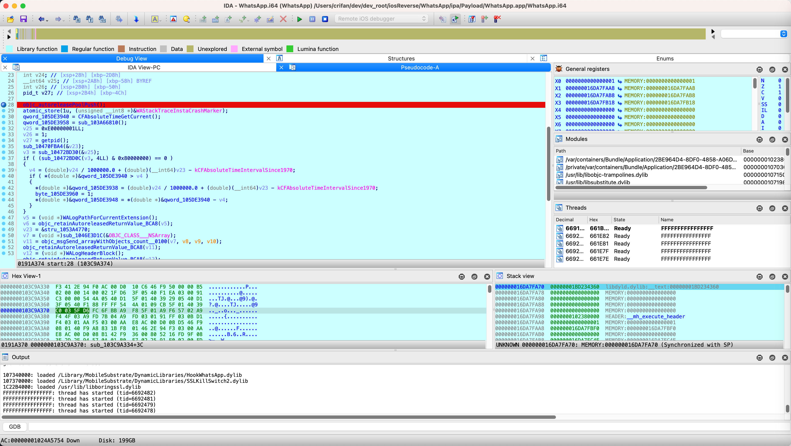
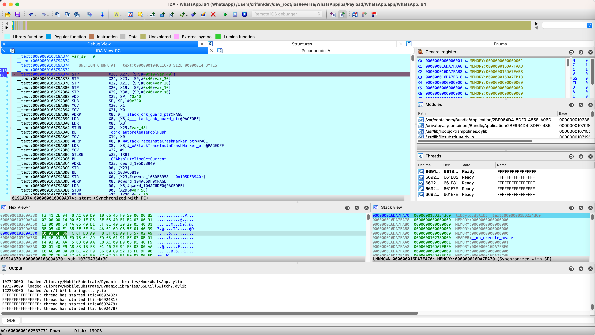
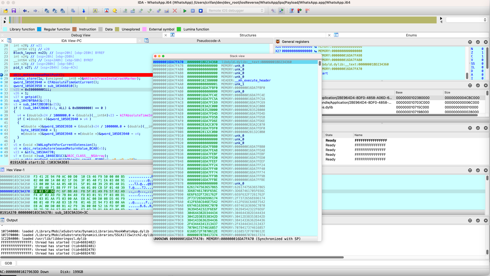
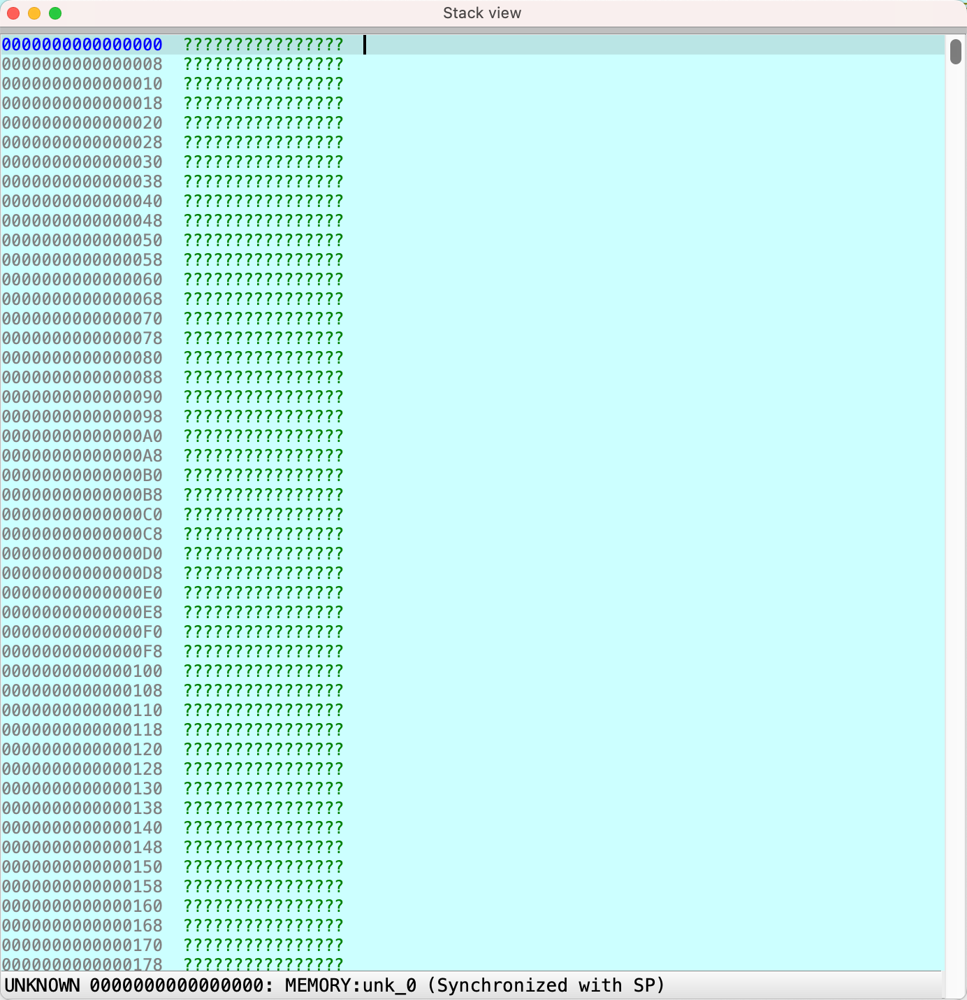
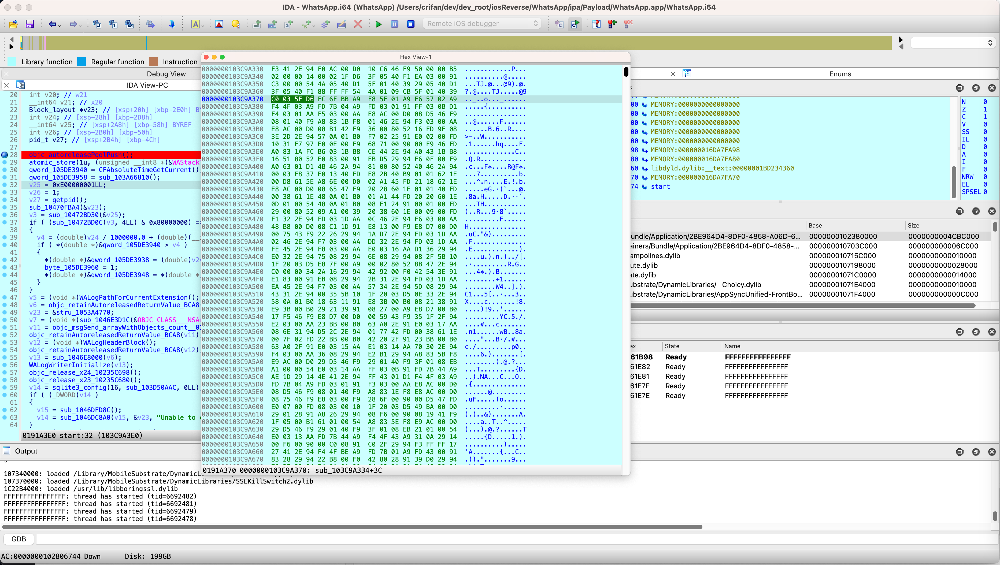
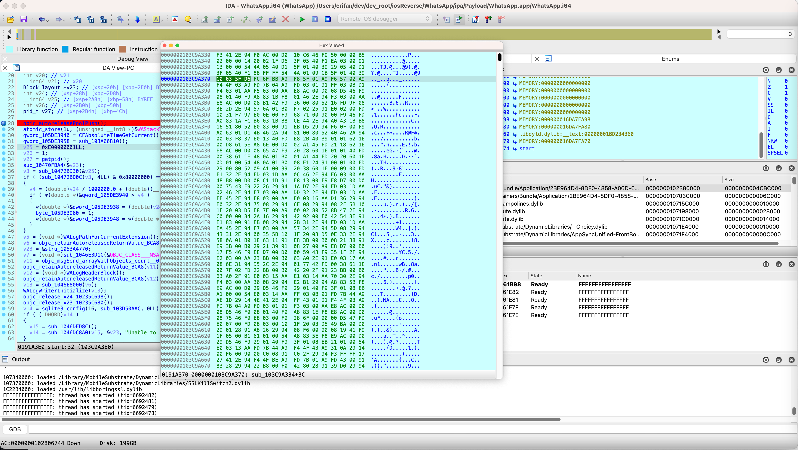
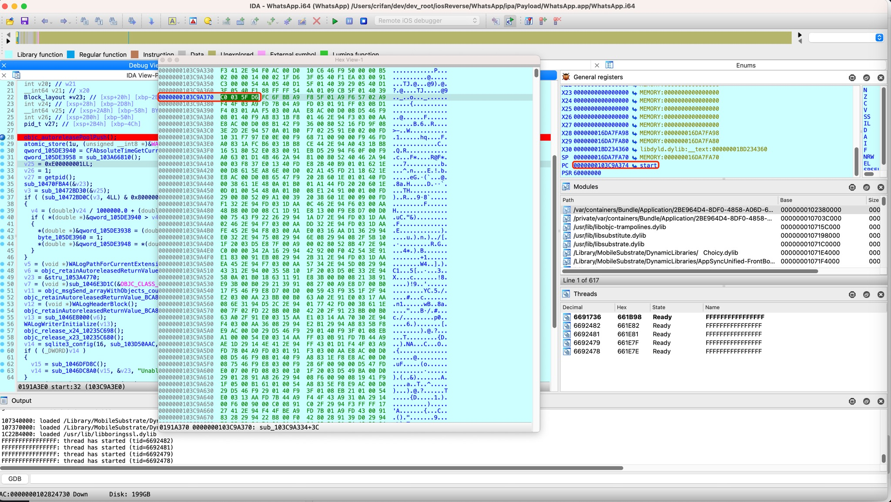
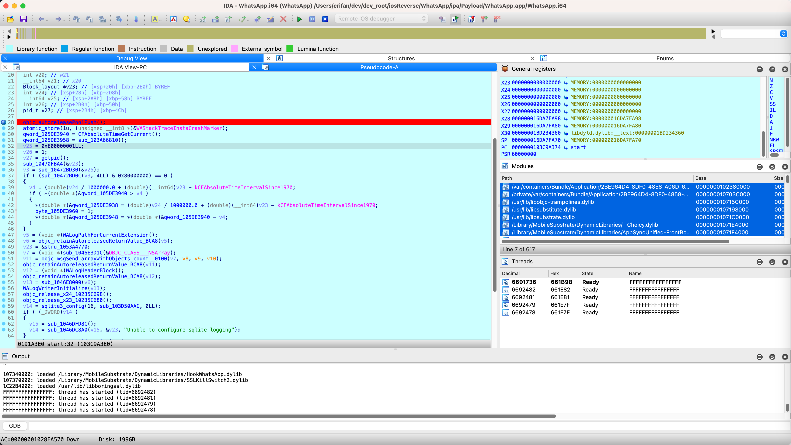
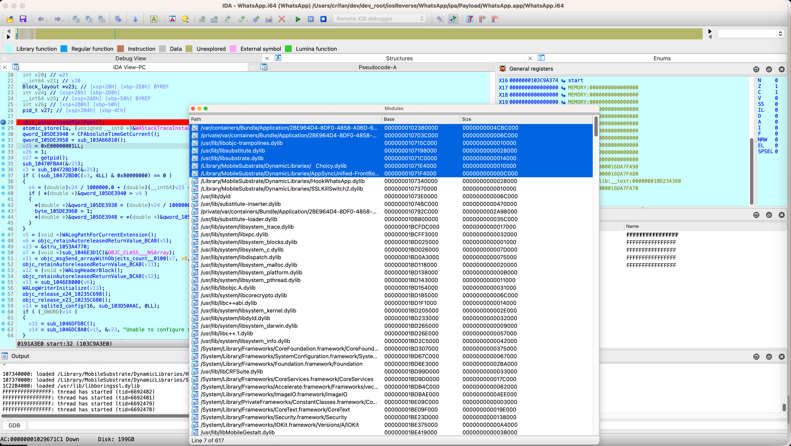
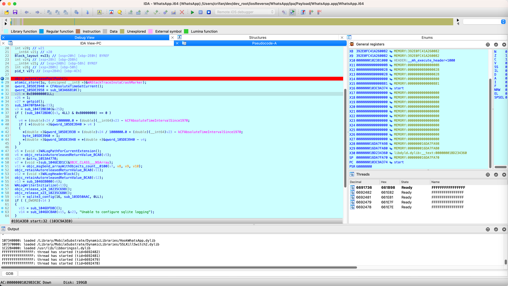

调试界面
之前给：IDA的汇编和F5伪代码，都加了断点：
断点的函数名是：入口函数start
此处进来后，默认进入：
伪代码中的断点：

IDA View-PC
点击 IDA View-PC，切换到：
IDA汇编，可以看到之前给汇编加的断点：

相关log
IDA左下角的最后一部分的log是：
insider the segment '__objc_const' as read-only
because the segment has the write permission
The decompiler did not consider the segment '__objc_data' as read-only
because the segment has the write permission
102380000: process /var/containers/Bundle/Application/2BE964D4-8DF0-4858-A06D-66CA8741ACDC/WhatsApp.app/WhatsApp has started (pid=4294967294)
shared cache mapping: 1BCFA0000..1F8D24000
shared cache mapping: 1FAD24000..2067E8000
shared cache mapping: 2087E8000..2112E8000
10703C000: loaded /private/var/containers/Bundle/Application/2BE964D4-8DF0-4858-A06D-66CA8741ACDC/WhatsApp.app/Frameworks/libswift_Concurrency.dylib
1074BC000: loaded /usr/lib/substitute-inserter.dylib
10792C000: loaded /private/var/containers/Bundle/Application/2BE964D4-8DF0-4858-A06D-66CA8741ACDC/WhatsApp.app/Frameworks/SharedModules.framework/SharedModules
1BCFDC000: loaded /usr/lib/system/libsystem_trace.dylib
1BCFF3000: loaded /usr/lib/system/libxpc.dylib
1BD025000: loaded /usr/lib/system/libsystem_blocks.dylib
...
1F4CEC000: loaded /System/Library/PrivateFrameworks/AppSSO.framework/AppSSO
1F4D1F000: loaded /System/Library/PrivateFrameworks/CPAnalytics.framework/CPAnalytics
1F5483000: loaded /usr/lib/swift/libswiftCoreML.dylib
1F549F000: loaded /usr/lib/swift/libswiftSpeech.dylib
1074BC000: loaded /usr/lib/substitute-inserter.dylib
gdb>objc[41732]: Class WADocumentAttachmentStats is implemented in both /private/var/containers/Bundle/Application/2BE964D4-8DF0-4858-A06D-66CA8741ACDC/WhatsApp.app/Frameworks/SharedModules.framework/SharedModules (0x10928d0c8) and /private/var/containers/Bund
gdb>le/Application/2BE964D4-8DF0-4858-A06D-66CA8741ACDC/WhatsApp.app/WhatsApp (0x105979e10). One of the two will be used. Which one is undefined.
objc[41732]: Class WAChatSearchBarCatalyst is implemented in both /private/var/containers/Bundle/Application/2BE9
gdb>64D4-8DF0-4858-A06D-66CA8741ACDC/WhatsApp.app/Frameworks/SharedModules.framework/SharedModules (0x1092b2720) and /private/var/containers/Bundle/Application/2BE964D4-8DF0-4858-A06D-66CA8741ACDC/WhatsApp.app/WhatsApp (0x105979fe0). One of the two will be use
gdb>d. Which one is undefined.
10715C000: loaded /usr/lib/libobjc-trampolines.dylib
107198000: loaded /usr/lib/libsubstitute.dylib
10B800000: loaded /usr/lib/substitute-loader.dylib
1071C0000: loaded /usr/lib/libsubstrate.dylib
1071E4000: loaded /Library/MobileSubstrate/DynamicLibraries/ Choicy.dylib
1071F4000: loaded /Library/MobileSubstrate/DynamicLibraries/AppSyncUnified-FrontBoard.dylib
gdb>SubstituteLog: Attempted to hook non-existant selector "trustStateForApplication:" in class "nil"
SubstituteLog: Attempted to hook non-existant selector "trustStateWithTrustRequiredReasons:" in class "nil"
SubstituteLog: Attempted to hook non-existant se
gdb>lector "trustState" in class "nil"
107340000: loaded /Library/MobileSubstrate/DynamicLibraries/HookWhatsApp.dylib
107370000: loaded /Library/MobileSubstrate/DynamicLibraries/SSLKillSwitch2.dylib
1C22B4000: loaded /usr/lib/libboringssl.dylib
FFFFFFFFFFFFFFFF: thread has started (tid=6692482)
FFFFFFFFFFFFFFFF: thread has started (tid=6692481)
FFFFFFFFFFFFFFFF: thread has started (tid=6692479)
FFFFFFFFFFFFFFFF: thread has started (tid=6692478)
发现并没有太多的界面，可供查看？
Stack View
点击部分窗口，变成浮动窗口，看看效果：

000000016DA7FA70 00000001BD234360 libdyld.dylib:__text:00000001BD234360
000000016DA7FA78 0000000000000000 MEMORY:unk_0
000000016DA7FA80 0000000000000000 MEMORY:unk_0
000000016DA7FA88 0000000000000000 MEMORY:unk_0
000000016DA7FA90 0000000000000000 MEMORY:unk_0
000000016DA7FA98 0000000102380000 HEADER:__mh_execute_header
000000016DA7FAA0 0000000000000001 MEMORY:unk_1
000000016DA7FAA8 000000016DA7FBF0 MEMORY:000000016DA7FBF0
000000016DA7FAB0 0000000000000000 MEMORY:unk_0
000000016DA7FAB8 000000016DA7FC4E MEMORY:000000016DA7FC4E
000000016DA7FAC0 000000016DA7FC5A MEMORY:000000016DA7FC5A
000000016DA7FAC8 000000016DA7FC69 MEMORY:000000016DA7FC69
000000016DA7FAD0 0000000283A2C000 MEMORY:0000000283A2C000
000000016DA7FAD8 0000000283528000 MEMORY:0000000283528000
000000016DA7FAE0 000000016DA7FD4D MEMORY:000000016DA7FD4D
000000016DA7FAE8 000000016DA7FD5B MEMORY:000000016DA7FD5B
000000016DA7FAF0 000000016DA7FD6E MEMORY:000000016DA7FD6E
000000016DA7FAF8 0000000283A2C070 MEMORY:0000000283A2C070
000000016DA7FB00 000000016DA7FDF0 MEMORY:000000016DA7FDF0
000000016DA7FB08 000000028132C0B0 MEMORY:000000028132C0B0
000000016DA7FB10 0000000000000000 MEMORY:unk_0
000000016DA7FB18 0000000000000000 MEMORY:unk_0
000000016DA7FB20 0000000000000000 MEMORY:unk_0
000000016DA7FB28 000000016DA7FB80 MEMORY:000000016DA7FB80
000000016DA7FB30 000000016DA7FEA8 MEMORY:000000016DA7FEA8
000000016DA7FB38 000000016DA7FEBF MEMORY:000000016DA7FEBF
000000016DA7FB40 000000016DA7FED0 MEMORY:000000016DA7FED0
000000016DA7FB48 000000016DA7FEEF MEMORY:000000016DA7FEEF
000000016DA7FB50 000000016DA7FF24 MEMORY:000000016DA7FF24
000000016DA7FB58 000000016DA7FF40 MEMORY:000000016DA7FF40
000000016DA7FB60 000000016DA7FF74 MEMORY:000000016DA7FF74
000000016DA7FB68 000000016DA7FF9B MEMORY:000000016DA7FF9B
000000016DA7FB70 000000016DA7FFBE MEMORY:000000016DA7FFBE
000000016DA7FB78 0000000000000000 MEMORY:unk_0
000000016DA7FB80 6261747563657865 MEMORY:6261747563657865
000000016DA7FB88 3D687461705F656C MEMORY:3D687461705F656C
000000016DA7FB90 6E6F632F7261762F MEMORY:6E6F632F7261762F
000000016DA7FB98 2F7372656E696174 MEMORY:2F7372656E696174
000000016DA7FBA0 412F656C646E7542 MEMORY:412F656C646E7542
000000016DA7FBA8 69746163696C7070 MEMORY:69746163696C7070
000000016DA7FBB0 36394542322F6E6F MEMORY:36394542322F6E6F
000000016DA7FBB8 304644382D344434 MEMORY:304644382D344434
000000016DA7FBC0 30412D383538342D MEMORY:30412D383538342D
000000016DA7FBC8 38414336362D4436 MEMORY:38414336362D4436
...
结果操作一下：都是?了：

Hex View
去看看：
Hex View-1- 
- 好像也看不出啥
- 
后来发现了：

此处是以hex的16进制，查看二进制的原始数据
此处PC在：
- 入口函数：start
- 地址：0000000103C9A374
是对得上的。
但是貌似Hex模式也没太多用。关闭。
Modules
去选择Modules：

且可以复制出内容：
/var/containers/Bundle/Application/2BE964D4-8DF0-4858-A06D-66CA8741ACDC/WhatsApp.app/WhatsApp 0000000102380000 0000000004CBC000
/private/var/containers/Bundle/Application/2BE964D4-8DF0-4858-A06D-66CA8741ACDC/WhatsApp.app/Frameworks/libswift_Concurrency.dylib 000000010703C000 000000000006C000
/usr/lib/libobjc-trampolines.dylib 000000010715C000 0000000000010000
/usr/lib/libsubstitute.dylib 0000000107198000 0000000000028000
/usr/lib/libsubstrate.dylib 00000001071C0000 0000000000014000
/Library/MobileSubstrate/DynamicLibraries/ Choicy.dylib 00000001071E4000 0000000000010000
/Library/MobileSubstrate/DynamicLibraries/AppSyncUnified-FrontBoard.dylib 00000001071F4000 000000000000C000
。。。
拖动已变成浮动窗口：

不过后续调试期间也很少用得到Modules，所以也可以去关闭了。
目前的IDA中调试iOS的app的效果是：
